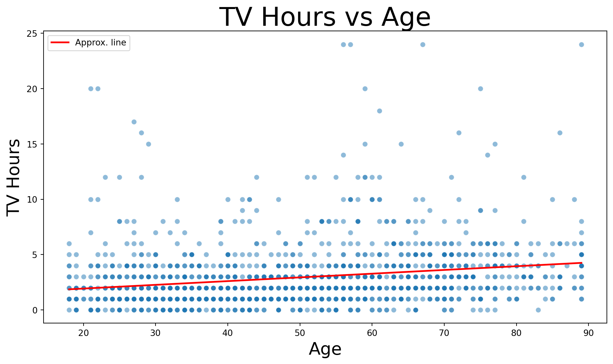
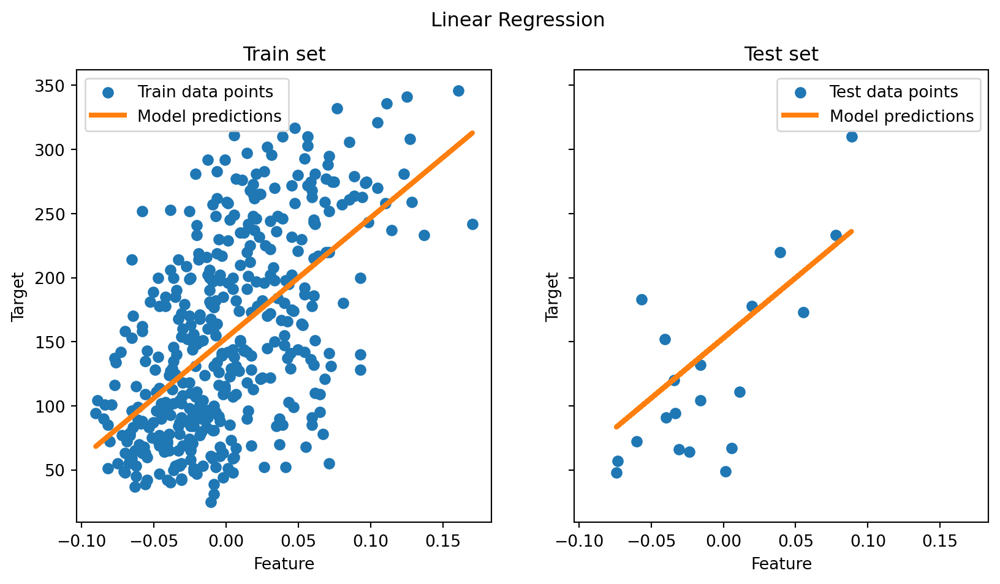

Code
import math
import pandas as pd
import numpy as np
import plotly.expressimport math
import pandas as pd
import numpy as np
import plotly.expressdf = pd.read_csv("age_vs_tvhours.csv")
df| age | tvhours | |
|---|---|---|
| 0 | 18 | 0 |
| 1 | 18 | 1 |
| 2 | 18 | 1 |
| 3 | 18 | 1 |
| 4 | 18 | 1 |
| ... | ... | ... |
| 1543 | 89 | 6 |
| 1544 | 89 | 6 |
| 1545 | 89 | 7 |
| 1546 | 89 | 8 |
| 1547 | 89 | 24 |
1548 rows × 2 columns
import seaborn as sns
import matplotlib.pyplot as plt
plt.figure(figsize=(10, 6))
sns.scatterplot(
data=df,
x="age",
y="tvhours",
alpha=0.5
)
# approximate best-fit line
m, b = np.polyfit(df["age"], df["tvhours"], 1)
x_vals = np.array([df["age"].min(), df["age"].max()])
y_vals = m * x_vals + b
plt.plot(x_vals, y_vals, color="red", linewidth=2, label="Approx. line")
plt.title("TV Hours vs Age", fontsize=30)
plt.xlabel("Age", fontsize=20)
plt.ylabel("TV Hours", fontsize=20)
plt.legend()
plt.tight_layout()
plt.show()
fig = plotly.express.scatter(
df,
x="age",
y="tvhours",
opacity=0.5,
title="TV Hours vs Age"
)
# approximate best-fit line
m, b = np.polyfit(df["age"], df["tvhours"], 1)
x_vals = np.array([df["age"].min(), df["age"].max()])
y_vals = m * x_vals + b
fig.add_scatter(
x=x_vals,
y=y_vals,
mode="lines",
name="Approx. line",
line=dict(color="red", width=2)
)
fig.update_layout(
xaxis_title="Age",
yaxis_title="TV Hours",
xaxis_title_font=dict(size=20),
yaxis_title_font=dict(size=20),
title_font=dict(size=30)
)
fig.show()df2=pd.read_csv("excel_assessement1.csv")
df2| Age | 30s | 40s | 50s | 60s | 70s | 80s | |
|---|---|---|---|---|---|---|---|
| 0 | Slightly acceptable | 1 | 5 | 6 | 5 | 5 | 2 |
| 1 | Moderately acceptable | 1 | 13 | 9 | 17 | 13 | 2 |
| 2 | Highly acceptable | 7 | 36 | 31 | 48 | 32 | 6 |
| 3 | Slightly acceptable | 11% | 9% | 13% | 7% | 10% | 20% |
| 4 | Moderately acceptable | 11% | 24% | 20% | 24% | 26% | 20% |
| 5 | Highly acceptable | 78% | 67% | 67% | 69% | 64% | 60% |
import matplotlib.pyplot as plt
import numpy as np
# Example structure for df2:
# df2 = pd.DataFrame({
# 'Age': ['30s', '40s', '50s', '60s', '70s', '80s'],
# 'Slightly acceptable': [...],
# 'Moderately acceptable': [...],
# 'Highly acceptable': [...]
# })
age_groups = df2['Age']
df2 = pd.DataFrame({
'Age': df2.columns[1:],
'Slightly acceptable': pd.to_numeric(df2.iloc[0, 1:].astype(str).str.replace('%', '', regex=False)),
'Moderately acceptable': pd.to_numeric(df2.iloc[1, 1:].astype(str).str.replace('%', '', regex=False)),
'Highly acceptable': pd.to_numeric(df2.iloc[2, 1:].astype(str).str.replace('%', '', regex=False)),
})
age_groups = df2['Age']
slightly = df2['Slightly acceptable']
moderately = df2['Moderately acceptable']
highly = df2['Highly acceptable']
bar_width = 0.6
ind = np.arange(len(age_groups))
plt.figure(figsize=(10,6))
p1 = plt.bar(ind, slightly, bar_width, label='Slightly acceptable', color='#ffffcc')
p2 = plt.bar(ind, moderately, bar_width, bottom=slightly, label='Moderately acceptable', color='#b3e2f7')
p3 = plt.bar(ind, highly, bar_width, bottom=slightly+moderately, label='Highly acceptable', color='#3182bd')
# Add percentage labels for "Highly acceptable"
for i, (x, h) in enumerate(zip(ind, highly)):
total = slightly.iloc[i] + moderately.iloc[i] + highly.iloc[i]
percent = int(round(100 * highly.iloc[i] / total))
plt.text(x, slightly.iloc[i] + moderately.iloc[i] + highly.iloc[i]/2, f'{percent}%',
ha='center', va='center', color='white', fontsize=14, fontweight='bold')
plt.xticks(ind, age_groups)
plt.ylabel('Count')
plt.title('Age and support for fuel treatments on public lands')
plt.legend()
plt.tight_layout()
plt.show()
import plotly.express as px
import pandas as pd
# Assuming df2 has columns: 'Age', 'Slightly acceptable', 'Moderately acceptable', 'Highly acceptable'
df_long = df2.melt(id_vars='Age',
value_vars=['Slightly acceptable', 'Moderately acceptable', 'Highly acceptable'],
var_name='Acceptance', value_name='Count')
fig = px.bar(
df_long,
x='Age',
y='Count',
color='Acceptance',
color_discrete_map={
'Slightly acceptable': '#ffffcc',
'Moderately acceptable': '#b3e2f7',
'Highly acceptable': '#3182bd'
},
title='Age and support for fuel treatments on public lands',
labels={'Count': 'Count'}
)
# Add percentage labels for "Highly acceptable"
for i, age in enumerate(df2['Age']):
total = df2.iloc[i][['Slightly acceptable', 'Moderately acceptable', 'Highly acceptable']].sum()
percent = int(round(100 * df2.iloc[i]['Highly acceptable'] / total))
fig.add_annotation(
x=age,
y=df2.iloc[i]['Slightly acceptable'] + df2.iloc[i]['Moderately acceptable'] + df2.iloc[i]['Highly acceptable'] / 2,
text=f"{percent}%",
showarrow=False,
font=dict(color="white", size=10, family="Arial Black"),
)
fig.update_layout(barmode='stack')
fig.show()import plotly.express as px
import plotly.io as pio
gapminder = px.data.gapminder()
def gapminder_plot(year):
gapminderYear = gapminder.query("year == " +
str(year))
fig = px.scatter(gapminderYear,
x="gdpPercap", y="lifeExp", color="continent",
size="pop", size_max=60,
hover_name="country")
fig.show()
gapminder_plot(1957)
gapminder_plot(2007)from sklearn.datasets import load_diabetes
from sklearn.model_selection import train_test_split
X, y = load_diabetes(return_X_y=True)
X = X[:, [2]] # Use only one feature
X_train, X_test, y_train, y_test =train_test_split(X, y, test_size = 20, shuffle = False)from sklearn.metrics import mean_squared_error, r2_score
from sklearn.linear_model import LinearRegression
regressor = LinearRegression()
regressor.fit(X_train, y_train) # ensure X_train, y_train exist and were preprocessed
y_pred = regressor.predict(X_test)
print(f"Mean Squared Error: {mean_squared_error(y_test, y_pred):.2f}")
print(f"Coefficient of Determination (R^2): {r2_score(y_test, y_pred):.2f}")Mean Squared Error: 2548.07
Coefficient of Determination (R^2): 0.47import matplotlib.pyplot as plt
fig, ax = plt.subplots(ncols=2, figsize=(10, 5), sharex=True, sharey=True)
ax[0].scatter(X_train, y_train, label="Train data points")
ax[0].plot(
X_train,
regressor.predict(X_train),
linewidth=3,
color="tab:orange",
label="Model predictions",
)
ax[0].set(xlabel="Feature", ylabel="Target", title="Train set")
ax[0].legend()
ax[1].scatter(X_test, y_test, label="Test data points")
ax[1].plot(X_test, y_pred, linewidth=3, color="tab:orange", label="Model predictions")
ax[1].set(xlabel="Feature", ylabel="Target", title="Test set")
ax[1].legend()
fig.suptitle("Linear Regression")
plt.show()
# Plotly version of the Train / Test regression visualization
import numpy as np
import plotly.graph_objects as go
from plotly.subplots import make_subplots
# Ensure regressor and predictions exist; fit if needed (regressor defined earlier)
try:
regressor
except NameError:
from sklearn.linear_model import LinearRegression
regressor = LinearRegression()
regressor.fit(X_train, y_train)
y_pred = regressor.predict(X_test)
# Prepare smooth regression line over a range that covers train+test
x_min = float(np.min(np.vstack([X_train, X_test])))
x_max = float(np.max(np.vstack([X_train, X_test])))
x_line = np.linspace(x_min, x_max, 200).reshape(-1, 1)
y_line = regressor.predict(x_line)
fig = make_subplots(rows=1, cols=2, subplot_titles=("Train set", "Test set"))
# Train subplot
fig.add_trace(go.Scatter(x=X_train.ravel(), y=y_train, mode='markers', name='Train data', marker=dict(color='blue')), row=1, col=1)
fig.add_trace(go.Scatter(x=x_line.ravel(), y=y_line, mode='lines', name='Regression line', line=dict(color='orange', width=3)), row=1, col=1)
# Test subplot
fig.add_trace(go.Scatter(x=X_test.ravel(), y=y_test, mode='markers', name='Test data', marker=dict(color='green')), row=1, col=2)
fig.add_trace(go.Scatter(x=x_line.ravel(), y=y_line, mode='lines', name='Regression line (same model)', line=dict(color='orange', width=3), showlegend=False), row=1, col=2)
# Layout
fig.update_layout(title_text='Linear Regression - Train vs Test (Plotly)', height=450)
fig.update_xaxes(title_text='Feature', row=1, col=1)
fig.update_xaxes(title_text='Feature', row=1, col=2)
fig.update_yaxes(title_text='Target', row=1, col=1)
fig.update_yaxes(title_text='Target', row=1, col=2)
fig.show()